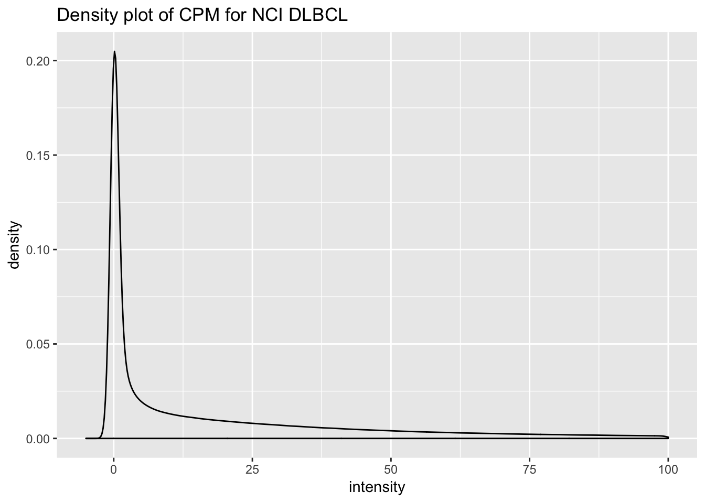
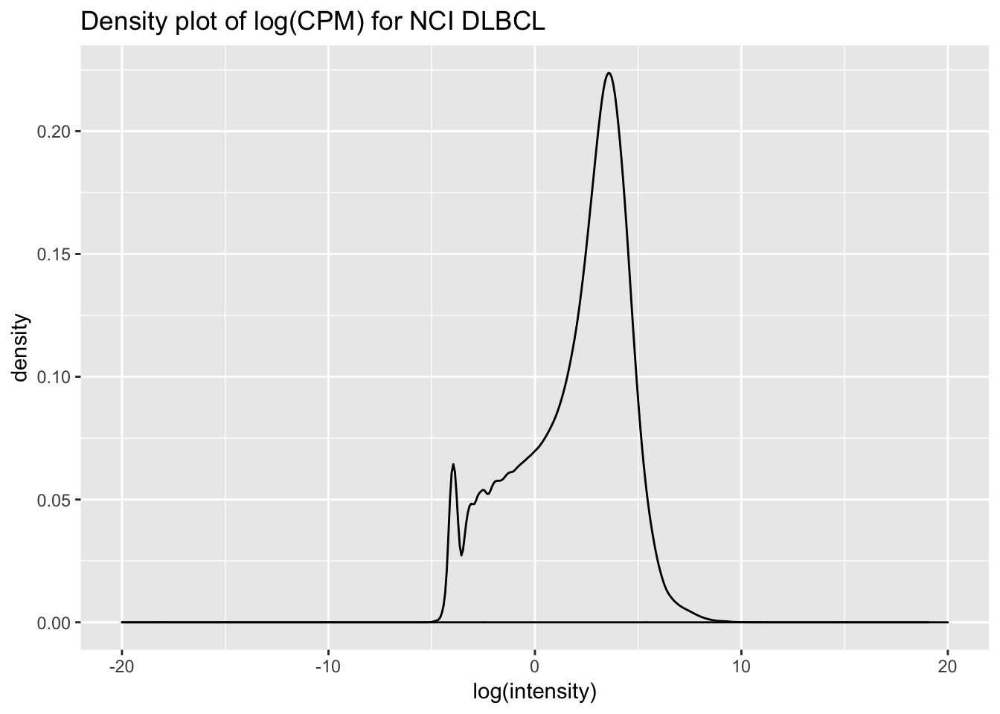
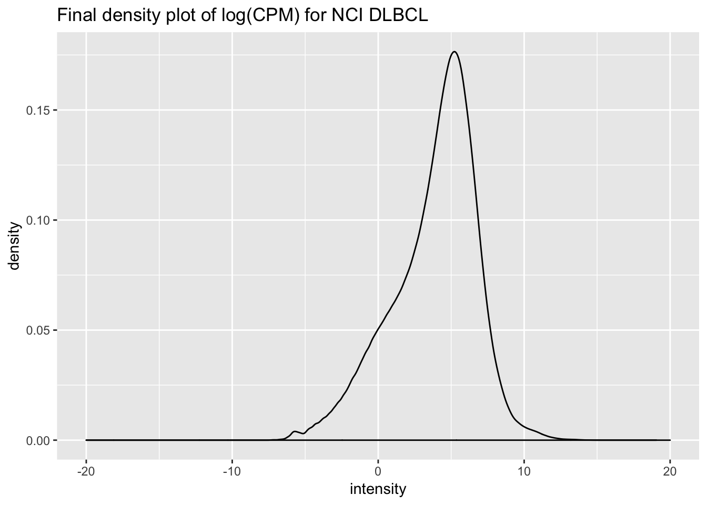

Last updated: 2019-06-13
Checks: 7 0
Knit directory: dlbcl_landscape/
This reproducible R Markdown analysis was created with workflowr (version 1.4.0). The Checks tab describes the reproducibility checks that were applied when the results were created. The Past versions tab lists the development history.
Great! Since the R Markdown file has been committed to the Git repository, you know the exact version of the code that produced these results.
Great job! The global environment was empty. Objects defined in the global environment can affect the analysis in your R Markdown file in unknown ways. For reproduciblity it’s best to always run the code in an empty environment.
The command set.seed(20190613) was run prior to running the code in the R Markdown file. Setting a seed ensures that any results that rely on randomness, e.g. subsampling or permutations, are reproducible.
Great job! Recording the operating system, R version, and package versions is critical for reproducibility.
Nice! There were no cached chunks for this analysis, so you can be confident that you successfully produced the results during this run.
Great job! Using relative paths to the files within your workflowr project makes it easier to run your code on other machines.
Great! You are using Git for version control. Tracking code development and connecting the code version to the results is critical for reproducibility. The version displayed above was the version of the Git repository at the time these results were generated.
Note that you need to be careful to ensure that all relevant files for the analysis have been committed to Git prior to generating the results (you can use wflow_publish or wflow_git_commit). workflowr only checks the R Markdown file, but you know if there are other scripts or data files that it depends on. Below is the status of the Git repository when the results were generated:
Ignored files:
Ignored: .Rhistory
Ignored: .Rproj.user/
Untracked files:
Untracked: data/gencode.v22.primary_assembly.annotation.gtf.geneinfo
Untracked: data/htseq_counts/
Untracked: output/expr_matrix.csv
Untracked: output/nci_dlbcl_annotation.csv
Untracked: output/nci_dlbcl_unprocessed_counts.csv
Note that any generated files, e.g. HTML, png, CSS, etc., are not included in this status report because it is ok for generated content to have uncommitted changes.
These are the previous versions of the R Markdown and HTML files. If you’ve configured a remote Git repository (see ?wflow_git_remote), click on the hyperlinks in the table below to view them.
| File | Version | Author | Date | Message |
|---|---|---|---|---|
| Rmd | 5ae4f47 | mleukam | 2019-06-13 | working preprocessing notebook |
Clear workspace
rm(list = ls())Load packages
library("tidyverse")── Attaching packages ──────────────────────────────────────── tidyverse 1.2.1 ──✔ ggplot2 3.1.1 ✔ purrr 0.3.2
✔ tibble 2.1.3 ✔ dplyr 0.8.1
✔ tidyr 0.8.3 ✔ stringr 1.4.0
✔ readr 1.3.1 ✔ forcats 0.4.0── Conflicts ─────────────────────────────────────────── tidyverse_conflicts() ──
✖ dplyr::filter() masks stats::filter()
✖ dplyr::lag() masks stats::lag()library("edgeR")Loading required package: limmalibrary("limma")
library("GSVA")Read in data
total_counts <- read_csv("output/nci_dlbcl_unprocessed_counts.csv")Parsed with column specification:
cols(
.default = col_double(),
gene = col_character()
)See spec(...) for full column specifications.Read in lookup table for features, gencode v22 (used by GDC to label features)
gencode_gtf <- read_tsv("data/gencode.v22.primary_assembly.annotation.gtf.geneinfo")Parsed with column specification:
cols(
gene_id = col_character(),
gene_type = col_character(),
gene_status = col_character(),
gene_name = col_character(),
level = col_double(),
havana_gene = col_character()
)Warning: 10327 parsing failures.
row col expected actual file
5304 -- 6 columns 5 columns 'data/gencode.v22.primary_assembly.annotation.gtf.geneinfo'
12445 -- 6 columns 5 columns 'data/gencode.v22.primary_assembly.annotation.gtf.geneinfo'
12913 -- 6 columns 5 columns 'data/gencode.v22.primary_assembly.annotation.gtf.geneinfo'
13082 -- 6 columns 5 columns 'data/gencode.v22.primary_assembly.annotation.gtf.geneinfo'
13310 -- 6 columns 5 columns 'data/gencode.v22.primary_assembly.annotation.gtf.geneinfo'
..... ... ......... ......... ...........................................................
See problems(...) for more details.Preprocessing RNAseq count data following methods outlined here: https://f1000research.com/articles/5-1408/v3
# filter for protein coding genes
total_counts_prcode <- total_counts %>%
dplyr::rename(gene_id = gene) %>%
left_join(gencode_gtf, by = "gene_id") %>%
dplyr::filter(gene_type == "protein_coding") %>%
dplyr::select(-gene_name, -gene_type, -gene_status, -level, -havana_gene) %>%
dplyr::select(gene_id, everything())
nrow(total_counts)[1] 60488nrow(total_counts_prcode)[1] 19814# normalize rows by log cpm using EdgeR
df_data <- total_counts_prcode %>%
dplyr::select(-gene_id) %>% as.matrix()
df_names <- total_counts_prcode %>% dplyr::select(gene_id)
out_data <- cpm(df_data, log = FALSE) %>% as_tibble()
total_counts_prcode_cpm <- bind_cols(df_names, out_data)tidy_cpm <- total_counts_prcode_cpm %>%
gather(key = "sampleID", value = "intensity", -gene_id)
dplot1 <- ggplot(tidy_cpm, aes(intensity)) +
geom_density() +
theme(legend.position = "none") +
xlim(-5, 100) +
ggtitle("Density plot of CPM for NCI DLBCL")
dplot1Warning: Removed 920063 rows containing non-finite values (stat_density).
dplot2 <- ggplot(tidy_cpm, aes(log(intensity))) +
geom_density() +
theme(legend.position = "none") +
xlim(-20, 20) +
ggtitle("Density plot of log(CPM) for NCI DLBCL")
dplot2Warning: Removed 1402676 rows containing non-finite values (stat_density).
# move gene names to rownames
totcounts_prcode_cpm_matrix <- total_counts_prcode_cpm %>%
as.data.frame() %>%
column_to_rownames(var = "gene_id")
totcounts_prcode_cpm_matrix[1:5, 1:5] nci_dlbcl_1 nci_dlbcl_2 nci_dlbcl_3 nci_dlbcl_4
ENSG00000000003.13 2.1464827 4.206426 2.416628 2.456197
ENSG00000000005.5 0.0420879 0.000000 0.000000 0.000000
ENSG00000000419.11 45.7495433 73.986992 26.459434 40.456209
ENSG00000000457.12 7.2391182 6.799428 28.452712 27.505350
ENSG00000000460.15 6.8182392 23.797997 18.856757 16.990390
nci_dlbcl_5
ENSG00000000003.13 10.72324364
ENSG00000000005.5 0.02082183
ENSG00000000419.11 41.81023927
ENSG00000000457.12 23.19552119
ENSG00000000460.15 18.01088495# filter out genes that aren't at least expressed greater than 1 in at least 45 cases (45 being about the size of the smallest group)
total_cpm_stats <- data.frame(
total = apply(totcounts_prcode_cpm_matrix, 1, function(x) sum(x > 1, na.rm = TRUE)))
keep <- which(total_cpm_stats$total >= 50)
dim(totcounts_prcode_cpm_matrix)[1] 19814 481total_cpm_filtered = totcounts_prcode_cpm_matrix[keep,]
dim(total_cpm_filtered)[1] 14575 481Normalisation by the method of trimmed mean of M-values (TMM) is performed using the calcNormFactors function in edgeR. The normalisation factors calculated here are used as a scaling factor for the library sizes.
# get normalization factors
norm_factors <- calcNormFactors(total_cpm_filtered, method = "TMM")
# apply factor to each column
total_cpm_norm <- map2_dfc(total_cpm_filtered, norm_factors, `*`)
total_cpm_norm <- as.data.frame(total_cpm_norm)
rownames(total_cpm_norm) <- rownames(total_cpm_filtered)
total_cpm_norm[1:5, 1:5] nci_dlbcl_1 nci_dlbcl_2 nci_dlbcl_3 nci_dlbcl_4
ENSG00000000003.13 1.567512 4.081409 2.815118 2.796125
ENSG00000000419.11 33.409514 71.788078 30.822463 46.055177
ENSG00000000457.12 5.286510 6.597347 33.144422 31.311974
ENSG00000000460.15 4.979155 23.090714 21.966142 19.341788
ENSG00000000938.11 25.418278 32.036269 50.507743 92.110354
nci_dlbcl_5
ENSG00000000003.13 13.12324
ENSG00000000419.11 51.16789
ENSG00000000457.12 28.38697
ENSG00000000460.15 22.04195
ENSG00000000938.11 61.13136total_log_cpm_filtered_norm <- log2(total_cpm_norm)
total_log_cpm_filtered_norm[1:5, 1:5] nci_dlbcl_1 nci_dlbcl_2 nci_dlbcl_3 nci_dlbcl_4
ENSG00000000003.13 0.6484762 2.029067 1.493196 1.483429
ENSG00000000419.11 5.0621871 6.165672 4.945910 5.525291
ENSG00000000457.12 2.4023156 2.721886 5.050694 4.968643
ENSG00000000460.15 2.3159009 4.529241 4.457210 4.273649
ENSG00000000938.11 4.6677944 5.001634 5.658433 6.525291
nci_dlbcl_5
ENSG00000000003.13 3.714052
ENSG00000000419.11 5.677167
ENSG00000000457.12 4.827157
ENSG00000000460.15 4.462180
ENSG00000000938.11 5.933841total_log_cpm_filtered_tbl <- total_log_cpm_filtered_norm %>%
as.data.frame() %>%
rownames_to_column(var = "gene") %>%
as_tibble() %>%
print()# A tibble: 14,575 x 482
gene nci_dlbcl_1 nci_dlbcl_2 nci_dlbcl_3 nci_dlbcl_4 nci_dlbcl_5
<chr> <dbl> <dbl> <dbl> <dbl> <dbl>
1 ENSG… 0.648 2.03 1.49 1.48 3.71
2 ENSG… 5.06 6.17 4.95 5.53 5.68
3 ENSG… 2.40 2.72 5.05 4.97 4.83
4 ENSG… 2.32 4.53 4.46 4.27 4.46
5 ENSG… 4.67 5.00 5.66 6.53 5.93
6 ENSG… 4.44 5.66 5.50 5.28 5.70
7 ENSG… 4.70 4.62 6.08 5.41 5.79
8 ENSG… 3.94 5.23 6.04 5.85 6.15
9 ENSG… 4.78 6.46 5.84 6.07 5.73
10 ENSG… 2.30 3.35 4.15 3.35 3.91
# … with 14,565 more rows, and 476 more variables: nci_dlbcl_6 <dbl>,
# nci_dlbcl_7 <dbl>, nci_dlbcl_8 <dbl>, nci_dlbcl_9 <dbl>,
# nci_dlbcl_10 <dbl>, nci_dlbcl_11 <dbl>, nci_dlbcl_12 <dbl>,
# nci_dlbcl_13 <dbl>, nci_dlbcl_14 <dbl>, nci_dlbcl_15 <dbl>,
# nci_dlbcl_16 <dbl>, nci_dlbcl_17 <dbl>, nci_dlbcl_18 <dbl>,
# nci_dlbcl_19 <dbl>, nci_dlbcl_20 <dbl>, nci_dlbcl_21 <dbl>,
# nci_dlbcl_22 <dbl>, nci_dlbcl_23 <dbl>, nci_dlbcl_24 <dbl>,
# nci_dlbcl_25 <dbl>, nci_dlbcl_26 <dbl>, nci_dlbcl_27 <dbl>,
# nci_dlbcl_28 <dbl>, nci_dlbcl_29 <dbl>, nci_dlbcl_30 <dbl>,
# nci_dlbcl_31 <dbl>, nci_dlbcl_32 <dbl>, nci_dlbcl_33 <dbl>,
# nci_dlbcl_34 <dbl>, nci_dlbcl_35 <dbl>, nci_dlbcl_36 <dbl>,
# nci_dlbcl_37 <dbl>, nci_dlbcl_38 <dbl>, nci_dlbcl_39 <dbl>,
# nci_dlbcl_40 <dbl>, nci_dlbcl_41 <dbl>, nci_dlbcl_42 <dbl>,
# nci_dlbcl_43 <dbl>, nci_dlbcl_44 <dbl>, nci_dlbcl_45 <dbl>,
# nci_dlbcl_46 <dbl>, nci_dlbcl_47 <dbl>, nci_dlbcl_48 <dbl>,
# nci_dlbcl_49 <dbl>, nci_dlbcl_50 <dbl>, nci_dlbcl_51 <dbl>,
# nci_dlbcl_52 <dbl>, nci_dlbcl_53 <dbl>, nci_dlbcl_54 <dbl>,
# nci_dlbcl_55 <dbl>, nci_dlbcl_56 <dbl>, nci_dlbcl_57 <dbl>,
# nci_dlbcl_58 <dbl>, nci_dlbcl_59 <dbl>, nci_dlbcl_60 <dbl>,
# nci_dlbcl_61 <dbl>, nci_dlbcl_62 <dbl>, nci_dlbcl_63 <dbl>,
# nci_dlbcl_64 <dbl>, nci_dlbcl_65 <dbl>, nci_dlbcl_66 <dbl>,
# nci_dlbcl_67 <dbl>, nci_dlbcl_68 <dbl>, nci_dlbcl_69 <dbl>,
# nci_dlbcl_70 <dbl>, nci_dlbcl_71 <dbl>, nci_dlbcl_72 <dbl>,
# nci_dlbcl_73 <dbl>, nci_dlbcl_74 <dbl>, nci_dlbcl_75 <dbl>,
# nci_dlbcl_76 <dbl>, nci_dlbcl_77 <dbl>, nci_dlbcl_78 <dbl>,
# nci_dlbcl_79 <dbl>, nci_dlbcl_80 <dbl>, nci_dlbcl_81 <dbl>,
# nci_dlbcl_82 <dbl>, nci_dlbcl_83 <dbl>, nci_dlbcl_84 <dbl>,
# nci_dlbcl_85 <dbl>, nci_dlbcl_86 <dbl>, nci_dlbcl_87 <dbl>,
# nci_dlbcl_88 <dbl>, nci_dlbcl_89 <dbl>, nci_dlbcl_90 <dbl>,
# nci_dlbcl_91 <dbl>, nci_dlbcl_92 <dbl>, nci_dlbcl_93 <dbl>,
# nci_dlbcl_94 <dbl>, nci_dlbcl_95 <dbl>, nci_dlbcl_96 <dbl>,
# nci_dlbcl_97 <dbl>, nci_dlbcl_98 <dbl>, nci_dlbcl_99 <dbl>,
# nci_dlbcl_100 <dbl>, nci_dlbcl_101 <dbl>, nci_dlbcl_102 <dbl>,
# nci_dlbcl_103 <dbl>, nci_dlbcl_104 <dbl>, nci_dlbcl_105 <dbl>, …tidy_log_cpm <- total_log_cpm_filtered_tbl %>%
gather(key = "sampleID", value = "intensity", -gene) %>%
print()# A tibble: 7,010,575 x 3
gene sampleID intensity
<chr> <chr> <dbl>
1 ENSG00000000003.13 nci_dlbcl_1 0.648
2 ENSG00000000419.11 nci_dlbcl_1 5.06
3 ENSG00000000457.12 nci_dlbcl_1 2.40
4 ENSG00000000460.15 nci_dlbcl_1 2.32
5 ENSG00000000938.11 nci_dlbcl_1 4.67
6 ENSG00000000971.14 nci_dlbcl_1 4.44
7 ENSG00000001036.12 nci_dlbcl_1 4.70
8 ENSG00000001084.9 nci_dlbcl_1 3.94
9 ENSG00000001167.13 nci_dlbcl_1 4.78
10 ENSG00000001460.16 nci_dlbcl_1 2.30
# … with 7,010,565 more rowsdplot3 <- ggplot(tidy_log_cpm, aes(intensity)) +
geom_density() +
theme(legend.position = "none") +
xlim(-20, 20) +
ggtitle("Final density plot of log(CPM) for NCI DLBCL")
dplot3Warning: Removed 42970 rows containing non-finite values (stat_density).
write_csv(total_log_cpm_filtered_norm, "output/expr_matrix.csv")
sessionInfo()R version 3.5.3 (2019-03-11)
Platform: x86_64-apple-darwin15.6.0 (64-bit)
Running under: macOS Mojave 10.14.4
Matrix products: default
BLAS: /Library/Frameworks/R.framework/Versions/3.5/Resources/lib/libRblas.0.dylib
LAPACK: /Library/Frameworks/R.framework/Versions/3.5/Resources/lib/libRlapack.dylib
locale:
[1] en_US.UTF-8/en_US.UTF-8/en_US.UTF-8/C/en_US.UTF-8/en_US.UTF-8
attached base packages:
[1] stats graphics grDevices utils datasets methods base
other attached packages:
[1] GSVA_1.30.0 edgeR_3.24.3 limma_3.38.3 forcats_0.4.0
[5] stringr_1.4.0 dplyr_0.8.1 purrr_0.3.2 readr_1.3.1
[9] tidyr_0.8.3 tibble_2.1.3 ggplot2_3.1.1 tidyverse_1.2.1
loaded via a namespace (and not attached):
[1] nlme_3.1-140 bitops_1.0-6 fs_1.3.1
[4] lubridate_1.7.4 bit64_0.9-7 RColorBrewer_1.1-2
[7] httr_1.4.0 rprojroot_1.3-2 tools_3.5.3
[10] backports_1.1.4 utf8_1.1.4 R6_2.4.0
[13] DBI_1.0.0 lazyeval_0.2.2 BiocGenerics_0.28.0
[16] colorspace_1.4-1 withr_2.1.2 tidyselect_0.2.5
[19] bit_1.1-14 compiler_3.5.3 git2r_0.25.2
[22] graph_1.60.0 cli_1.1.0 rvest_0.3.4
[25] Biobase_2.42.0 xml2_1.2.0 labeling_0.3
[28] scales_1.0.0 digest_0.6.19 rmarkdown_1.13
[31] pkgconfig_2.0.2 htmltools_0.3.6 rlang_0.3.4
[34] readxl_1.3.1 rstudioapi_0.10 RSQLite_2.1.1
[37] shiny_1.3.2 generics_0.0.2 jsonlite_1.6
[40] RCurl_1.95-4.12 magrittr_1.5 Rcpp_1.0.1
[43] munsell_0.5.0 S4Vectors_0.20.1 fansi_0.4.0
[46] stringi_1.4.3 whisker_0.3-2 yaml_2.2.0
[49] plyr_1.8.4 grid_3.5.3 blob_1.1.1
[52] parallel_3.5.3 promises_1.0.1 crayon_1.3.4
[55] lattice_0.20-38 haven_2.1.0 annotate_1.60.1
[58] hms_0.4.2 locfit_1.5-9.1 zeallot_0.1.0
[61] knitr_1.23 pillar_1.4.1 geneplotter_1.60.0
[64] stats4_3.5.3 XML_3.98-1.20 glue_1.3.1
[67] evaluate_0.14 modelr_0.1.4 vctrs_0.1.0
[70] httpuv_1.5.1 cellranger_1.1.0 gtable_0.3.0
[73] assertthat_0.2.1 xfun_0.7 mime_0.6
[76] xtable_1.8-4 broom_0.5.2 later_0.8.0
[79] shinythemes_1.1.2 AnnotationDbi_1.44.0 memoise_1.1.0
[82] IRanges_2.16.0 workflowr_1.4.0 GSEABase_1.44.0